《封锁区：零号大厦》关卡策划与系统设计案
本作品集展示基于 Unreal Engine 5.8 研发的单人搜打撤 FPS 关卡原型（76m×42m 现代办公大楼）。 聚焦解决“无弹窗沉浸教学”、“6×6空间网格背包拼图与Ctrl潜行低掩体遮蔽”以及“全场断电后依靠建筑剪影的双向空间复用”核心设计命题。
体验心流与情绪张弛律 (Beat Chart)
本交互面板可动态切换 7 个体验心流阶段的张力曲线、筛选角色/通道/掩体几何度量衡、模拟 4 种典型背包取舍方案，并检视 SOP-17 辅机运维解谜逻辑链。
1:500 关卡平面图与拓扑布局 (Level Plan)
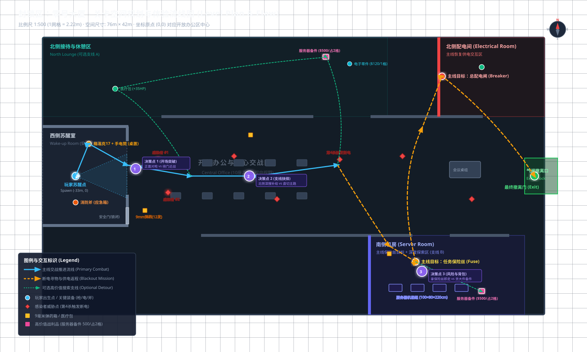
空间度量衡与建筑规范 (Spatial Metrics)
关卡坚决杜绝“凭手感随意摆放道具”。所有通道净宽、门洞高度、掩体离散尺寸与交火距离均遵循严格的工业级关卡策划规范（完整白皮书见 [查看完整手册 SpatialMetrics.md]）。
| 规范分类 | 设计参数 (cm) | 对应参考物 | 关卡体验功能与设计意图 |
|---|---|---|---|
| 角色物理包络 | 站高 180cm (半高 90) / 蹲高 96cm (半高 48) | 人体站立与屈膝姿态 | Ctrl蹲姿半高降至48cm，角色头部完全潜入78cm办公桌与45cm茶几遮蔽线以下。 |
| 运动与潜行速度 | 走 375cm/s / 冲 600cm/s / 潜 180cm/s | 战术慢步与突击逃脱 | Ctrl长按/C切换潜行，敌方视觉索敌半径削减 55%，低掩体视线射线阻断隐匿。 |
| 第一人称视平线 | 高 165cm (站) / 105cm (蹲) | 第一人称相机 | 黄金视线基准面；站立平视桌面道具，蹲下平视进入掩体后射击盲区。 |
| 一级主干干道 | 宽 360cm, 高 320cm | 中央办公主走廊 | 双向高速机动与拉扯空间，悬空吊挂黄色电缆桥架。 |
| 机房冷通道 | 宽 360cm, 高 350cm | 南侧数据中心夹道 | 真实对置 8 台机柜形成的洁净室走廊，狭窄逼仄高压感。 |
| 半高腰身掩体 | 45cm ~ 78cm | 咖啡桌 (45) / 办公桌 (78) | 蹲下完全隐蔽（视高110cm），站立可平视开火射击。 |
| 全高视线掩体 | 180cm ~ 350cm | 承重混凝土方柱 / 服务器柜 | 100% 阻断视线与子弹，切断 AI 仇恨追踪。 |
| 视线截断上限 | ≤ 2200 cm (22m) | 折叠交错墙体 | 全图无超 22m 直线长廊，杜绝无脑清怪，保障剔除渲染效率。 |
开场教学：安全观察、聚焦光圈与残弹克制
传统 FPS 往往依赖打断沉浸感的大段弹窗或开场直接堆怪。本关卡采用“空间叙事与视线构图”： 开场初始偏角 15°，让左侧工位聚焦台灯（引导武器拾取）与正前方防弹窗外晃动的感染者（建立生存威胁）自然并存。
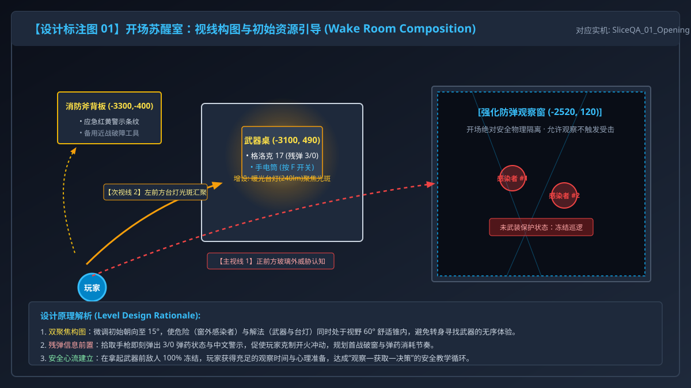
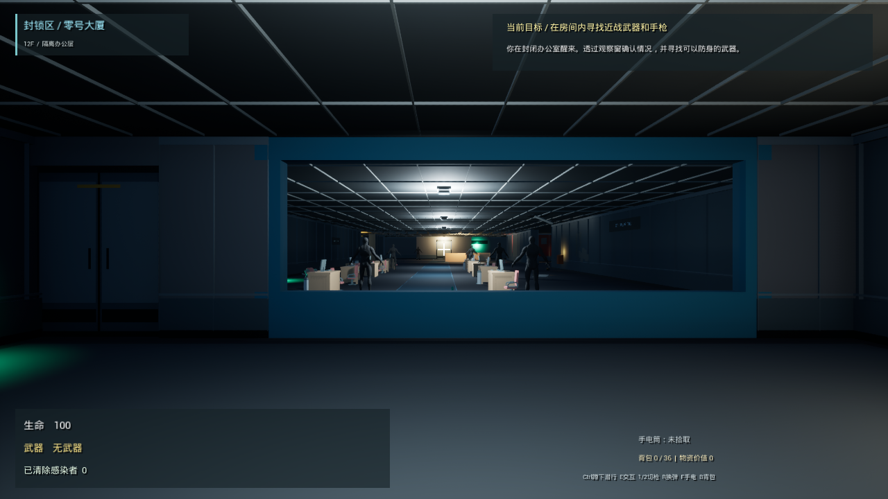
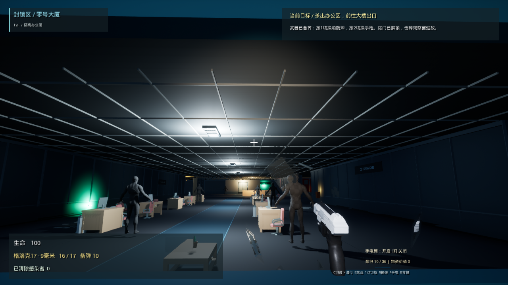

搜索取舍：6×6 空间网格战术背包与拼图博弈 (DP-1 ~ DP-4)
关卡坚决杜绝“把奖励藏在只有开发者知道的地方”。参考《三角洲行动》与《背包乱斗》，背包系统升维为 6×6 (36格) 二维空间网格。 武器与战术装具物理进包（消防斧 2×6 贯通两列、格洛克手枪 2×2、战术手电 2×1）， 并支持 R 键悬空旋转（如 2×1 ↔ 1×2，2×6 ↔ 6×2）与自由拖拽摆放。所有偏离主线的探索均建立在“门洞透视瞥见线索—权衡网格空间—获取大件战利品—安全折返”之上。
| 决策点 | 触发位置 | 视觉线索 (看见什么) | 网格与战术代价 (Cost) | 潜在收益 (Reward) | 折返关系 |
|---|---|---|---|---|---|
| DP-1: 开场突破 | 观察窗前 (-2520, 120) | 玻璃外两只感染者徘徊，远端地面黄光 | 消耗仅有的 3 发手枪底火 | 占领掩体，拿到首箱 12 发备弹 (1×1 堆叠) | 安全切入中央走廊 |
| DP-2: 北休憩区 (支线 A) | 中央走廊十字路 (650, 0) | 隔断缝隙透视粉色光斑与医疗包 | 绕行 35m，腾出 2×2 矩形空位 | $500 备件 A (2×2) + 医疗包 (1×2) + $120零件 (1×1) | 穿过走廊直达北配电室 |
| DP-3: 南机房深搜 (支线 B) | 机房保险丝台 (1850, -1300) | 保险丝后方夹道尽头控制台蓝光 | 暗室额外深入 25m，背包满载必须弃物或拼图旋转 | $500 备件 B (2×2) (全搜极限 $1120) | 原路返回大厅红塔引路 |
| DP-4: 行政金库解谜 (支线 C) | 主管办公室与密闭金库门 (-1350, 1650) | 主管桌发光便签与墙面白板；金库门显示锁闭。SOP-17 时序：动力(04)→冷却(03)→净化(中央) | 横穿大厦三大区域交互 3 处终端；按错触发跳闸警报并唤醒感染者 | 开启密闭金库，获得高价值电子废料 ($180) + 战备医疗包 (+35 HP)，达成 36/36 极限满载 | 动线与主线保险丝与合闸高度重合，自然顺路达成 |


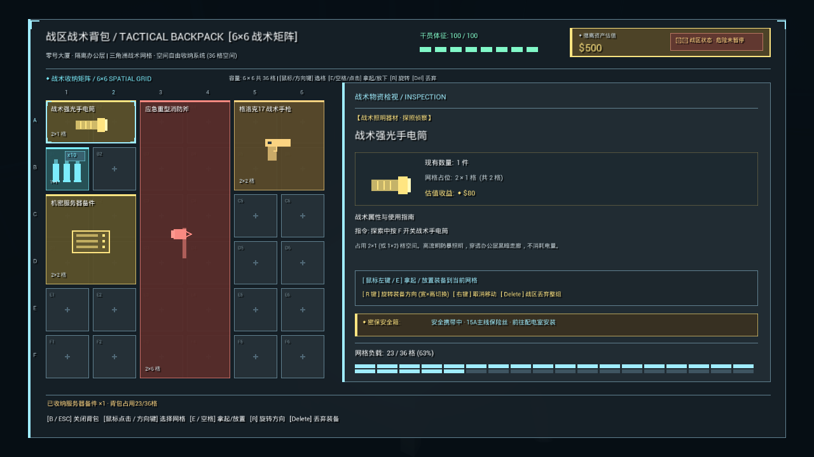
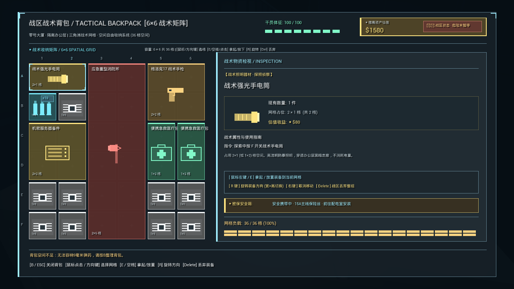
断电逆转：形体剪影地标与暗夜双向导航
第 4 次击杀后触发全场跳闸断电。在无小地图的前提下，关卡拒绝使用悬浮箭头，而是依靠形体剪影（百叶窗格栅）、独立供电常驻红塔与物理立柱路牌引导返程：
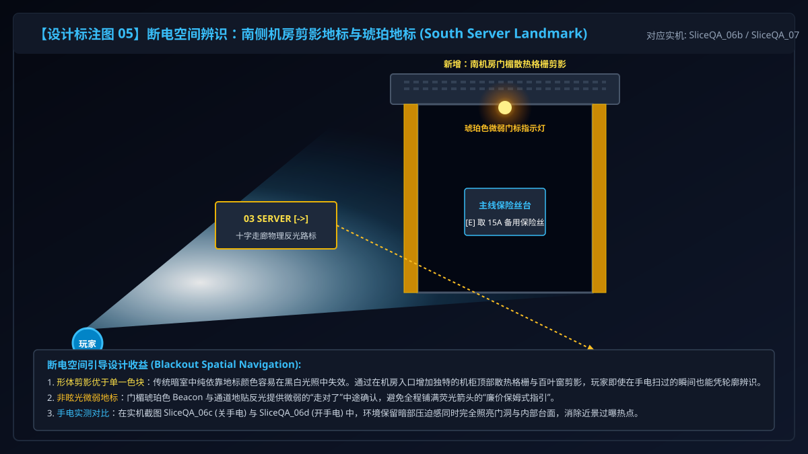
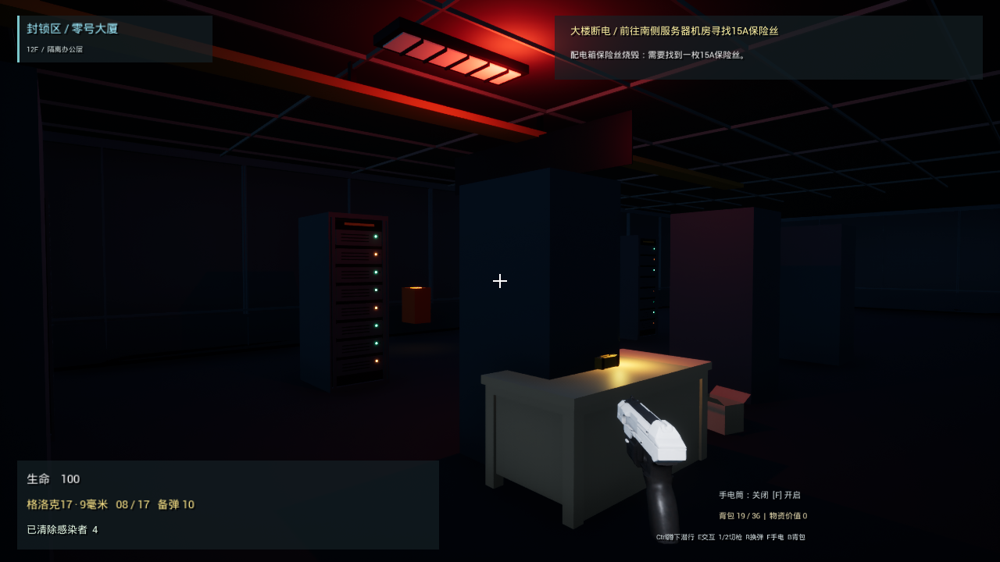
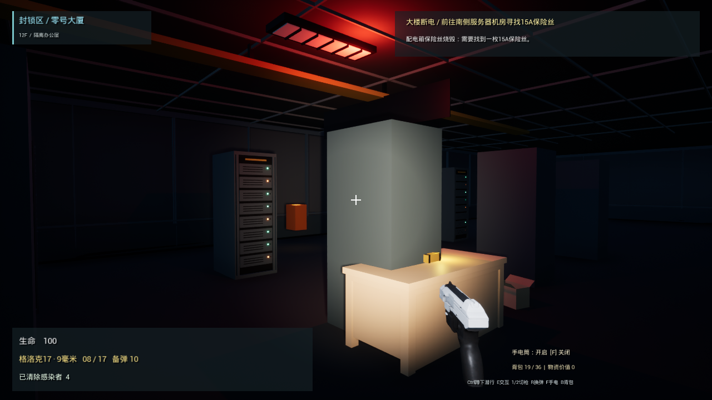

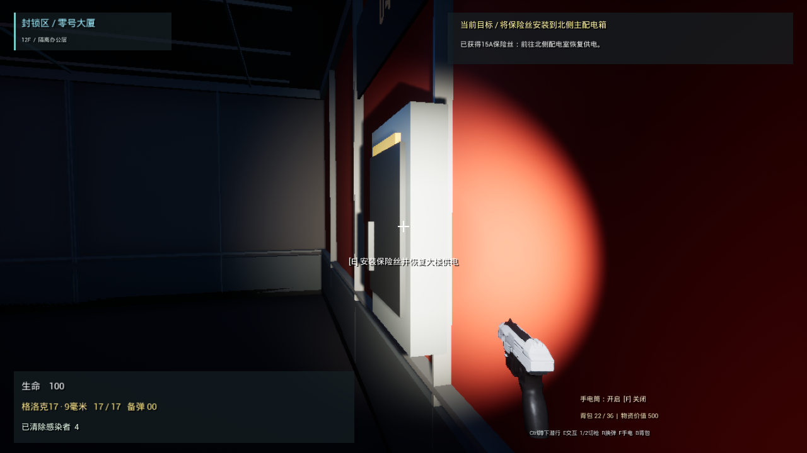
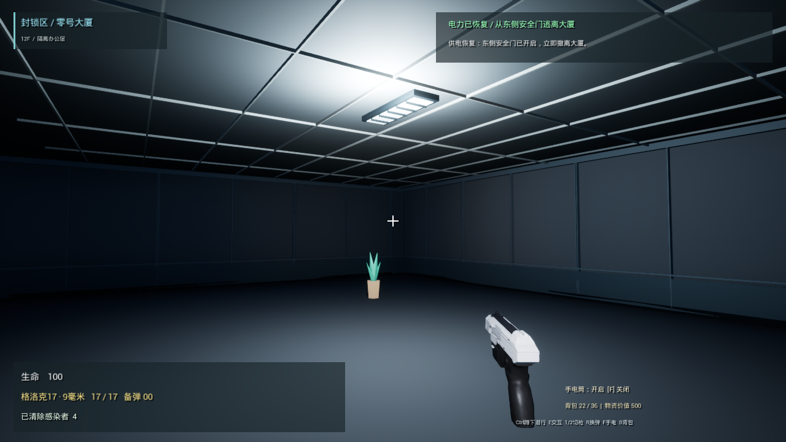
四项核心设计迭代深度对比 (Before / After)
自动化 QA 回归体系与局限反思 (Honest Disclosure)
| 验证模块 | 断言数 | 验证核心逻辑 | 自动化结果 |
|---|---|---|---|
| 开场教学与潜行武装 | 32 项 | 未武装敌人冻结、手电/手枪/消防斧场景交互、Ctrl潜行半高48cm与敌方侦测-55%遮蔽 | PASS (32/32) |
| 武器手感与射击后坐力 | 35 项 | 格洛克 3/0 初始残弹、镜头上抬与枪身位移、停止开火平滑复位、瞄准降低后坐 | PASS (35/35) |
| 办公区战斗与事件触发 | 32 项 | 强化玻璃真实物理碎裂、受击与死亡判定、第 4 杀触发全场跳闸断电 | PASS (32/32) |
| 6×6 空间网格背包与原子操作 | 68 项 | 6×6网格开闭、武器装具物理占格(斧2x6/枪2x2/手电2x1)、R键旋转、9mm堆叠、2×2矩形连续拒收与原子保留 | PASS (68/68) |
| 环境解谜与金库系统 | 2 项 | 4处 SOP-17 辅机终端注册、金库密闭门初始闭锁与逻辑序列就绪 | PASS (2/2) |
| 断电寻路与返程供电 | 46 项 | 手电照明对比、机房保险丝交互、配电箱合闸通电、全楼照明复苏、气闸门升起 | PASS (46/46) |
| 撤离结算与防掉落重开 | 46 项 | 撤离气闸防跌落实体碰撞、战利品金币核算 ($0~$1300)、F5 一键重开新局重置 | PASS (46/46) |
| 总计 | 261 项 | 单人搜打撤全流程垂直切片闭环 | 100% PASS (54.50s) |
1. 自动化耗时 54.41 秒绝不代表真实玩家通关时长：这是脚本按最优坐标传送执行的回归耗时。根据关卡尺度与搜索密度，真实新手通关时长目标为 8 ~ 12 分钟。
2. 测试辅助不留在自然游玩中：敌人冻结仅在开场未武装保护与 QA 脚本测量时启用，不使用永久无限弹药等破坏体验的“后门”。
3. 可看见 ≠ 被注意到：光影与构图为视线提供了高概率捕捉，但真实玩家的注意力分配仍需依赖下一阶段真人录屏与访谈确认。
简历条目与 90 秒面试现场讲解稿 (Pitch)
封锁区：零号大厦 · UE5 单人搜打撤关卡原型（独立策划 / AI 辅助开发，2026.09）
• 围绕“安全观察威胁—获取工具—有限弹药战斗—断电逆转—寻保险丝—通电撤离”设计闭环，以 C++ 程序化搭建 76m×42m 现代办公楼，组织双向视线与心流节拍；
• 落地 6×6 (36格) 空间网格战术背包与 Ctrl 潜行掩体遮蔽系统（敌方侦测-55% / 胶囊半高 48cm / 武器装具物理占格 / R 键旋转），任务关键道具解耦不占格；设计非对称高价值支线（最高带出 $1300），通过框架视线与 SOP-17 辅机运维解谜引导主动取舍；
• 针对断电空间辨识难题，设计机房散热百叶窗剪影、配电间红色应急灯塔及十字反光路标；搭建 261 项自动化 QA 回归管线，保障后坐力、交互射线与重开逻辑零退化。
封锁区：零号大厦 · FPS 战斗与空间背包搜打撤原型（独立策划 / AI 辅助开发，2026.09）
• 制定并实现第一人称武器机制规格：手枪开场 3 发底火 / 备用 0 发、弹匣上限 17 发、开火镜头平滑上抬与后坐复位；结合场景手电与应急灯，营造极度缺弹的高压资源管理氛围；
• 参考《三角洲行动》与《背包乱斗》设计 6×6 空间网格拼图背包，消防斧(2×6)、手枪(2×2)、手电(2×1)及备件(2×2)真实物理占格与 R 键旋转，构建高价值大件战利品与生存耗材的排他性容量冲突；
• 完成 1:500 关卡平面规划（LevelPlan.svg），撰写涵盖设计假设、实机对比与局限反思的完整策划作品集案。
在设计上我着重解决了三个关卡痛点：
第一是开场的直观教学与潜行：玩家在苏醒室内，我通过 15° 偏角的视线构图，让玩家先在防弹玻璃后安全观察晃动的感染者建立威胁认知；接着利用工位台灯引导玩家发现仅剩 3 发底火的格洛克 17 和手电。同时引入 Ctrl 战术蹲姿潜行，将胶囊半高降至 48cm 并削减 55% 敌方索敌，支持利用 78cm 办公桌低掩体射线遮蔽，实现沉浸式潜行周旋。
第二是 6×6 空间网格背包驱动的取舍与解谜：参考《三角洲行动》，设计了 6×6 共 36 格的空间网格背包，武器（斧2x6/枪2x2）与手电(2x1)物理占用空间，支持 R 键旋转与拼图摆放。配合 SOP-17 辅机运维时序解谜开启行政金库，引导玩家在携带高额战利品与保留急救包之间进行极限定位博弈。主线保险丝独立显示，杜绝了背包满导致的卡关。
第三是断电逆转与地标导航：第 4 次击杀会触发办公楼全面断电。为了防止迷路，我给南机房设计了散热格栅剪影，给北配电室配置了应急红色频闪灯塔，并在十字路口架设物理路标。玩家开启手电后，能精准调动白天的空间记忆完成‘搜保险丝—回配电室通电—气闸撤离’的返程闭环。
项目逻辑由我制定系统与关卡规格后在 AI 辅助下实现轻量 C++ 生成，搭建了 261 项断言的回归验证管线保障核心机制零退化。期待您的交流与指正！”
制作边界与诚信声明 (Attribution)
- 关卡整体体验节拍设计与 1:500 平面拓扑规划；
- 开场安全教学、未武装保护与残弹压迫机制；
- 6×6 空间网格背包拼图规则、Ctrl 潜行低掩体遮蔽与路线决策矩阵；
- 断电反转形体剪影地标与双向动线组织；
- 261 项系统回归测试用例设计与自动化断言验证；
- 全套设计简报、矢量平面图、标注图与作品集页面搭建。
- 武器与手臂：Unreal Engine 官方 First Person 模板资产；
- 敌人模型：UE 官方 Mannequin（玩法占位）；
- 办公家具：Kenney CC0 模块库；
- 墙板门框与材质：自制轻量模块；
- 代码实现：底层由策划主导架构与规格后，在 AI 编程助手协同下完成 C++ 落地。